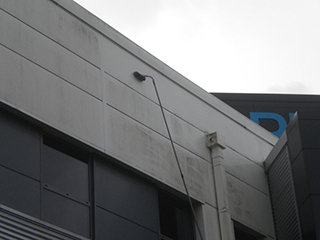
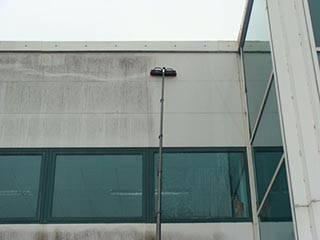

Системы для высотной мойки фасадов созданы специально для мытья остекления фасадов высотой не более 20 метров. За счёт подобной системы удается сократить расходы на клининговые работы. Фасад здания можно помыть с земли, не привлекая для этого специалистов по промышленному альпинизму и передвижные автовышки.
Особенностью системы для высотной мойки фасадов является то, что вода которая подается под давлением к основанию моющего сегмента, проходит через ионообменную смолу. В результате деионизации производится 100% деминерализованная вода, которая по мере высыхания на стекле не оставляет известковые подтеки и пятна. Нет необходимости дополнительно насухо протирать поверхность.Высоко модульный карбон, из которого состоят телескопические штанги, дает максимальную жесткость при сверхлегком весе.
Команда подразделения Prestige Fasade – Cleaning успешно использует подобные системы для высотной мойки стекло алюминиевых фасадов.
Минусом использования телескопических моющих систем является слабая эффективность в работе с сильно загрязненными фасадами из-за отсутствия подачи чистящей химии. Фасадам сложной конфигурации и смешанного типа материалов может подойти мойка промышленными альпинистами либо использование передвижной автовышки. Выбор способа которым производить клиниг фасада здания остается за вами.
